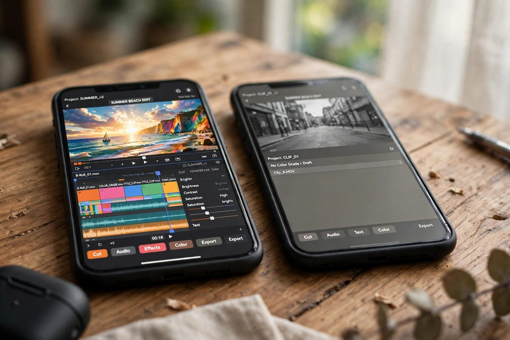
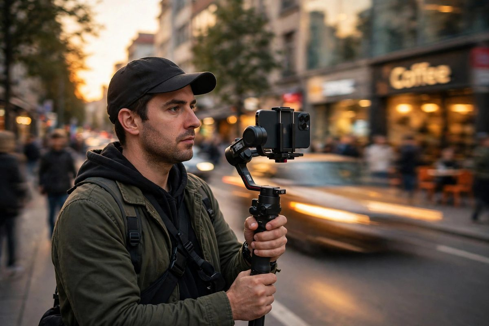

Trending Edits Tutorial

Every viral edit looks like magic until you break it down — then it is just a hook, a beat, a transition and a twist. Here is how trending CapCut edits are built, and how to make your own version.
Spotting a trend before it peaks
Trends move fast: a sound or edit style can go from unknown to everywhere in a week, then vanish. The way to catch them early is to spend fifteen minutes a day scrolling your For You page and Reels feed with a notebook mindset. When you see the same sound, the same transition or the same format three times from different creators, that is a trend forming. Save those videos. Check CapCut's Templates tab too — the trending templates there are a direct signal of what is about to blow up. The goal is not to copy the trend, but to notice it while it still has room to grow.
Breaking down a viral edit
Pick one viral video and watch it five times, each time looking for one thing. First watch: what is the hook, and when does it land? Second: where are the cuts, and do they land on the beat? Third: what transitions and effects appear, and how many are there? Fourth: what does the text say, and how is it styled? Fifth: what happens at the end — a twist, a payoff, a loop back to the start? Write down the answers. You will find that almost every viral edit uses the same skeleton: hook in two seconds, cuts on the beat, one signature effect, and an ending that rewards watching to the end. The content changes; the skeleton does not.
Rebuilding it with your own clips
Now rebuild the skeleton with your own material. Use the same timing and the same type of transition, but your own footage, your own words and your own twist. If the original used a velocity edit on a car, use a velocity edit on your bike, your cooking, your cat — the technique transfers, the content does not. Change at least one big thing: the music, the hook, or the ending. A video that copies the original shot for shot gets compared to the original and loses; a video that borrows the structure and adds something new gets watched on its own merits.
The anatomy of a viral edit
Most viral edits share the same anatomy. The hook (0–2 seconds) promises something specific. The setup (2–10 seconds) delivers the context fast, with cuts on the beat. The middle (10–25 seconds) has one signature moment — a speed ramp, a transition, a reveal — that makes people rewatch. The ending (last 3 seconds) pays off the hook or loops perfectly back to the start, so the video replays itself. Loopability matters more than people think: a video that ends where it began gets watched twice, and the algorithm counts that as retention. When you plan an edit, sketch this shape first, then fill it with clips.
Templates vs building from scratch
Templates are the fastest way into a trend: find the trending template in CapCut, drop in your clips, and post. The trade-off is sameness — thousands of people use the same template, and the algorithm eventually tires of identical videos. Building from scratch takes longer but lets you change the music, the pacing and the ending, which is what makes a video stand out once a trend is crowded. A good rule: use the template when a trend is fresh, and build from scratch once you have seen the same template five times in your feed. By then, the audience wants a new take, not another copy.
Staying original — and safe
Two rules keep you out of trouble. First, never re-upload someone else's video or use their clips as your own — use the trend's structure, not its footage. Second, only use music and sounds through the platform's own library or CapCut's licensed sounds, so your video does not get muted or taken down. Trends reward speed, but a copyright strike or a removed video costs more than the views were worth. The creators who last are the ones who treat trends as raw material, not as content to copy.
Frequently asked questions
How fast should I jump on a trend?
Within the first few days of noticing it. After a week of heavy use, the trend is saturated and your version needs a genuinely new twist to stand out.
Do I need premium to make trending edits?
No. Most trending edits use free tools — cuts, keyframes, speed curves and free templates. Premium adds convenience, not the trend itself.
Why did my version of a trend flop?
Usually the hook was weak or the first two seconds looked identical to a hundred other versions. Change the opening and the ending first.
Download CapCut — official app
Get the real CapCut free from your official app store. No modified files, no risk.
Try the tools
Aspect Ratio Calculator
Presets for TikTok, Reels, Shorts and YouTube. Enter one side and get the matching resolution instantly.
Bitrate & Export Size Calculator
Work out how big your exported video will be from its length and bitrate — or the bitrate for a target size.
Caption Timing Helper
Paste your script and split it into timed caption lines with start and end timestamps, ready to use.
Template Idea Generator
Pick a niche and a mood and get a complete edit idea: hook, style, transitions and music vibe.
More guides
 What Is CapCut Mod APK?
What Is CapCut Mod APK?
CapCut Premium vs Free Is CapCut Mod APK Safe?
Is CapCut Mod APK Safe? How to Install CapCut Officially
How to Install CapCut Officially Best CapCut Templates in 2026
Best CapCut Templates in 2026 Auto Captions in CapCut
Auto Captions in CapCut Keyframe Animation in CapCut
Keyframe Animation in CapCut
CapCut Transitions Tutorial Best Video Quality Settings
Best Video Quality Settings Best Export Settings in CapCut
Best Export Settings in CapCut CapCut for TikTok
CapCut for TikTok CapCut for Instagram Reels
CapCut for Instagram Reels Text Effects in CapCut
Text Effects in CapCut Background Removal in CapCut
Background Removal in CapCut Speed Ramping in CapCut
Speed Ramping in CapCut Filters and Effects in CapCut
Filters and Effects in CapCut Audio Editing in CapCut
Audio Editing in CapCut CapCut vs KineMaster
CapCut vs KineMaster CapCut for Beginners
CapCut for Beginners